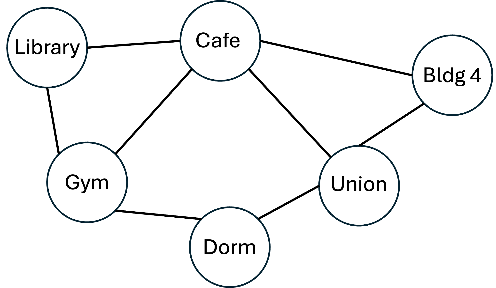
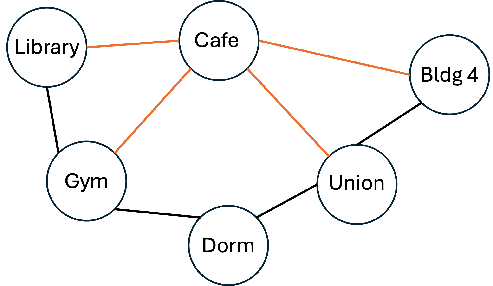
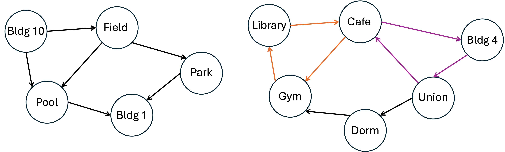
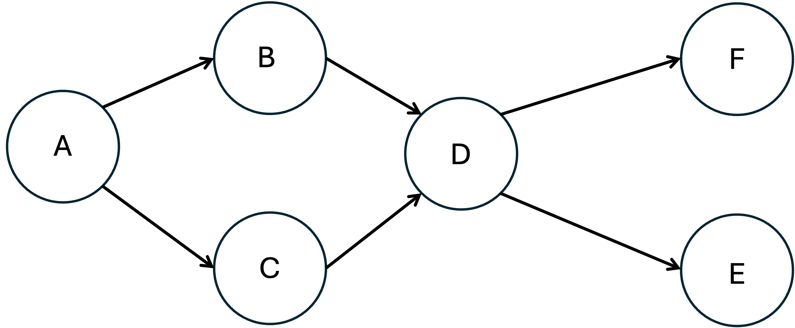
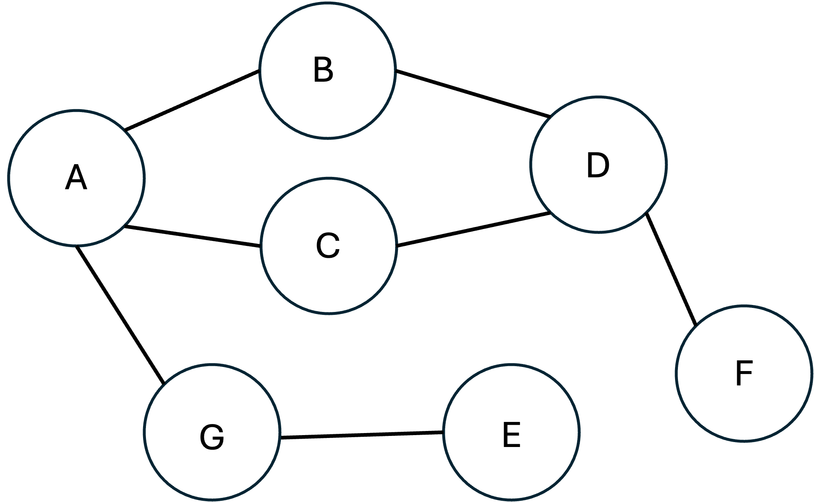
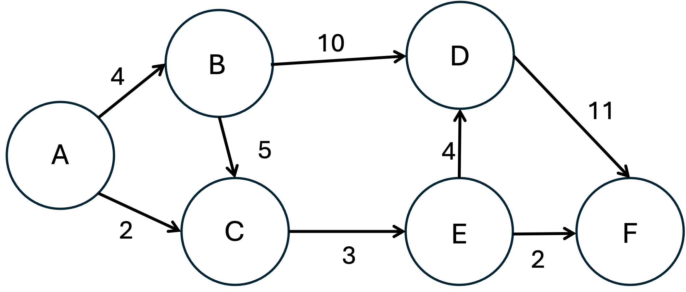
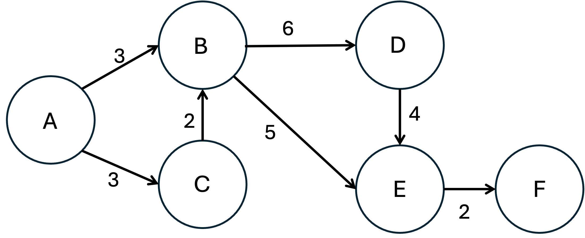

Graphs
Liting Zhang
University of West Florida
Outline
Graph basics: vertices, edges, paths, and degree
Graph properties and types: directed, weighted, cyclic, connected, dense
Graph representation: adjacency list and adjacency matrix
Breadth-first search (BFS): level-by-level traversal using a queue
Depth-first search (DFS): deep-path traversal using a stack
Dijkstra's algorithm: shortest path in weighted graphs
Learning goals
After this lecture, you should be able to
Define a graph and identify vertices, edges, and graph properties
Compare adjacency list and adjacency matrix representations
Trace BFS on a graph and list vertices in visit order
Trace DFS on a graph and list vertices in visit order
Explain why BFS uses a queue and DFS uses a stack
Trace Dijkstra's algorithm step by step on a weighted graph
Identify when Dijkstra's algorithm cannot be applied
What is a graph?
A graph is a data structure with two components:
Vertices (nodes): represent entities such as people, cities, or computers
Edges: represent relationships or connections between vertices
Written formally as G = (V, E)
Examples of graphs in practice:
Social networks: people are vertices, friendships are edges
Computer networks: devices are vertices, connections are edges
Maps: cities are vertices, roads are edges

Vertices and edges
Vertex (node): a single point or entity in the graph
Edge: a link between two vertices
Can be directed (one-way arrow) or undirected (two-way)
Can carry a weight such as cost, distance, or time
Adjacent vertices: two vertices directly connected by an edge
Path: a sequence of vertices connected by edges
In unweighted graphs: path length = number of edges
In weighted graphs: path length = sum of edge weights
Cycle: a path that starts and ends at the same vertex
Degree of a vertex
Degree of a vertex: the number of edges connected to it
In an undirected graph: degree = total edge count at that vertex
In a directed graph, degree splits into two:
In-degree: number of edges arriving at the vertex
Out-degree: number of edges leaving the vertex
Degree of a graph: the highest vertex degree among all vertices in the graph

Graph-level properties
Directed / Undirected: edges go one way or both ways
Weighted / Unweighted: edges carry a numerical value or they do not
Cyclic / Acyclic: whether any cycle exists in the graph
Cyclic: at least one cycle exists
Acyclic: no cycles at all
Connected / Disconnected: whether every vertex can be reached from any other
Strongly connected: every vertex is reachable from every other following directed edges
Weakly connected: connected only if edge directions are ignored
Dense / Sparse: ratio of actual edges to the maximum possible edges
Directed graphs (digraphs)
Each edge has a direction: from a start vertex to a terminating vertex
An edge A → B does not imply B → A
Key terms:
Outgoing edges: edges leaving a vertex, counted in out-degree
Incoming edges: edges arriving at a vertex, counted in in-degree
Examples: web hyperlinks, airline routes, task dependencies, course prerequisites
Weighted graphs
Each edge carries a weight representing cost, distance, or time
Path cost: sum of all edge weights along the path
Two paths may use the same number of edges but have very different costs
Examples:
Road maps: weights are distances in miles
Flight networks: weights are ticket price or travel time
Network routing: weights are latency or bandwidth cost
Finding the minimum-cost path requires a weighted-graph algorithm such as Dijkstra's
Cyclic vs. acyclic: example
Left graph (acyclic): no way to follow directed edges from a vertex and return to it
Right graph (cyclic): distinct cycles exist

Reading graph properties
- Directed/Undirected?
- Weighted/Unweighted?
- Degree of vertex D is:
- Maximum degree in the graph:
- Connected?
- Cyclic/acyclic?

Storing a graph in memory
Two standard representations are used in code:
Adjacency list: each vertex stores a list of its neighbors
Adjacency matrix: a V×V grid;
matrix[i][j] = 1means an edge from i to j
The best choice depends on the graph's edge density:
Sparse graph (few edges): adjacency list saves space
Dense graph (many edges, close to V²): matrix is more practical
Adjacency list
Each vertex holds a list of its directly connected neighbors
Example for an undirected 4-vertex graph:
A: [B, C]
B: [A, C]
C: [A, B, D]
D: [A, C]Space complexity: O(V + E), efficient for sparse graphs
Check if edge (u, v) exists: O(degree(u)), must scan u's neighbor list
List all neighbors of u: O(degree(u))
Adjacency matrix
A V×V matrix; entry [i][j] = 1 if an edge from vertex i to j exists, else 0
Same four-vertex graph:
| A | B | C | D | |
|---|---|---|---|---|
| A | 0 | 1 | 1 | 0 |
| B | 1 | 0 | 1 | 0 |
| C | 1 | 1 | 0 | 1 |
| D | 0 | 0 | 1 | 0 |
Space complexity: O(V²), costly for large sparse graphs
Check if edge (u, v) exists: O(1), a single array lookup
Comparison: adjacency list vs. matrix
| Property | Adjacency List | Adjacency Matrix |
|---|---|---|
| Space | O(V + E) | O(V²) |
| Edge existence check | O(degree) | O(1) |
| List all neighbors | O(degree) | O(V) |
| Add an edge | O(1) | O(1) |
| Best for | Sparse graphs | Dense graphs |
Practice
How many edges are in the undirected graph G represented by the following adjacency matrix?
| A | B | C | D | |
|---|---|---|---|---|
| A | 0 | 1 | 1 | 0 |
| B | 1 | 0 | 1 | 0 |
| C | 1 | 1 | 0 | 1 |
| D | 0 | 0 | 1 | 0 |
Why traverse a graph?
Traversal means visiting every reachable vertex from a starting point
Common questions that require traversal:
Is vertex B reachable from vertex A?
What is the shortest path from A to B?
Does a cycle exist in this graph?
Two standard strategies:
BFS: explore all immediate neighbors before going deeper
DFS: go as deep as possible along one path before backtracking
Both run in O(V + E) time
Breadth-first search: idea
Visit the start vertex, then all its neighbors, then their unvisited neighbors, and so on
Uses a queue (FIFO) to decide which vertex to visit next
A queue ensures we always process closer vertices before farther ones
Vertices are marked visited when first discovered, not when processed
Applications: shortest path in unweighted graphs, social connection recommendations
BFS: algorithm steps
Step 1: Mark start vertex visited; push it
Step 2: pop vertex u
Step 3: For each neighbor v of u:
If v has not been visited, mark it visited and push it
Step 4: Repeat from Step 2 until the queue is empty
Key invariant: when a vertex is poped, all vertices at a smaller distance from the start have already been visited
BFS: implementation
void bfs(const Graph& g, int start) {
queue<int> q;
vector<bool> visited(g.size(), false);
visited[start] = true; // mark before push to avoid duplicates
q.push(start);
while (!q.empty()) {
int u = q.front();
q.pop();
// process u here
for (int v : g.adj[u]) {
if (!visited[v]) {
visited[v] = true;
q.push(v);
}
}
}
}BFS Example
Start at A. BFS explores the graph level by level.
When more than one unvisited neighbor is available, visit them in alphabetical order.
| Action | Queue | Visited Order | |
|---|---|---|---|
| 0 | Mark A visited. push A | [A] | A |
| 1 | pop A. Visit B, push B. Visit C, push C. | [B, C] | A, B, C |
| 2 | pop B. Visit D, push D | [C, D] | A, B, C, D |
| 3 | pop C. No unvisited neighbors | [D] | A, B, C, D |
| 4 | pop D. Visit E, push E. Visit F, push F. | [E, F] | A, B, C, D, E, F |
| 5 | pop E. No unvisited neighbors | [F] | A, B, C, D, E, F |
| 6 | pop F. No unvisited neighbors | [] | A, B, C, D, E, F |
BFS: practice
Start from vertex A
Track the queue contents at each step
When more than one unvisited neighbor is available, visit them in alphabetical order
List the order in which vertices are visited

Depth-first search: idea
Explore as far as possible along one branch before backtracking
Uses a stack (LIFO) to decide which vertex to visit next
A stack causes us to dive into the most recently discovered neighbor first
Can also be implemented recursively, using the call stack implicitly
Vertices are marked visited when processed to avoid revisiting
Applications: cycle detection, maze solving, topological sorting
DFS: algorithm steps (iterative)
Step 1: Push the start vertex onto the stack
Step 2: Pop vertex u from the stack
Step 3: If u has already been visited, skip it and go to Step 2
Step 4: Mark u visited; push all unvisited neighbors of u
Step 5: Repeat from Step 2 until the stack is empty
Note: the order neighbors are pushed affects which branch is explored first
DFS: iterative implementation
void dfs(const Graph& g, int start) {
stack<int> st;
vector<bool> visited(g.size(), false);
st.push(start);
while (!st.empty()) {
int u = st.top();
st.pop();
if (visited[u]) continue; // already processed, skip
visited[u] = true;
// process u here
for (int v : g.adj[u]) {
if (!visited[v]) {
st.push(v);
}
}
}
}DFS: recursive implementation
The call stack replaces the explicit stack: each recursive call goes one level deeper
Backtracking happens automatically when a call returns
The helper function
dfsHelperis called once per unvisited vertex
void dfsHelper(const Graph& g, int u, vector<bool>& visited) {
visited[u] = true;
// process u here
for (int v : g.adj[u]) {
if (!visited[v]) {
dfsHelper(g, v, visited); // recurse into unvisited neighbor
}
}
}
void dfs(const Graph& g, int start) {
vector<bool> visited(g.size(), false);
dfsHelper(g, start, visited);
}Iterative vs. recursive: both produce a valid DFS order; visit order may differ because the iterative version pushes all neighbors at once while the recursive version processes them one at a time
DFS example
Start at A; DFS dives deep before backtracking
When more than one unvisited neighbor is available, push them in alphabetical order
| Step | Action | Stack | Visited Order |
|---|---|---|---|
| 0 | Push A | [A] | |
| 1 | Pop A, mark visited. Push B, C | [B, C] | A |
| 2 | Pop C, mark visited. Push D | [B, D] | A, C |
| 3 | Pop D, mark visited. Push B, E, F | [B, B, E, F] | A, C, D |
| 4 | Pop F, mark visited. No unvisited neighbors | [B, B, E] | A, C, D, F |
| 5 | Pop E, mark visited. No unvisited neighbors | [B, B] | A, C, D, F, E |
| 6 | Pop B, mark visited. No unvisited neighbors | [B] | A, C, D, F, E, B |
| 7 | Pop B, already visited, skip | [] | A, C, D, F, E, B |
DFS: practice
Start from vertex A
When more than one unvisited neighbor is available, push them in alphabetical order
Track the stack contents at each step
List the order in which vertices are visited
BFS vs. DFS: comparison
| Property | BFS | DFS |
|---|---|---|
| Data structure | Queue (FIFO) | Stack (LIFO) |
| Exploration order | Level by level | Deep path first |
| Shortest path? | Yes (unweighted) | Not guaranteed |
| Cycle detection | Possible | Common use |
| Typical use cases | Shortest paths, recommendations | Cycles, mazes, topological sort |
| Time complexity | O(V + E) | O(V + E) |
Problem: shortest path in a weighted graph
BFS finds the shortest path by edge count but ignores edge weights
When edges have different costs, the path with the fewest edges is not always the cheapest
Dijkstra's algorithm finds the minimum-cost path from one source to all other vertices
Core idea: always expand the closest unfinished vertex next
Use a min-heap priority queue keyed by current known distance
Once a vertex is popped, its shortest distance is finalized
Requirement: all edge weights must be non-negative
Dijkstra's algorithm: steps
Step 1: Set
dist[start] = 0; all other distances to infinityStep 2: Push
(0, start)into the min-heapStep 3: Pop the entry
(d, u)with the smallest distanceIf
d != dist[u], this is a stale entry, skip it
Step 4: For each neighbor v of u with edge weight w:
Compute candidate:
dist[u] + wIf smaller than
dist[v], updatedist[v]and push(dist[v], v)
Step 5: Repeat from Step 3 until the queue is empty
Dijkstra's: complexity
Each vertex is finalized at most once when popped from the heap
Each edge triggers at most one push to the priority queue
Complexity depends on the priority queue implementation:
Binary min-heap: O((V + E) log V), preferred for sparse graphs
Simple array: O(V²), simpler to implement, acceptable for small or dense graphs
Dijkstra's: implementation
vector<int> dijkstra(const Graph& g, int start) {
const int INF = 1e9;
vector<int> dist(g.size(), INF);
vector<int> prev(g.size(), -1);
using State = pair<int,int>; // (dist, vertex)
priority_queue<State, vector<State>, greater<State>> pq; // min-heap
dist[start] = 0;
pq.push({0, start});
while (!pq.empty()) {
auto [d, u] = pq.top(); pq.pop();
if (d != dist[u]) continue; // stale entry, skip
for (auto [v, w] : g.adj[u]) {
if (dist[u] + w < dist[v]) { // shorter path found
dist[v] = dist[u] + w;
prev[v] = u;
pq.push({dist[v], v});
}
}
}
return dist;
}Dijkstra's: key implementation notes
Min-heap:
priority_queuewithgreater<State>gives the smallest distance firstStale entry check:
if (d != dist[u]) continueThe same vertex may appear in the queue multiple times with different distances
Only process the entry that matches the current best known distance
Relaxation: updating
dist[v]when a shorter path through u is foundprev array: tracks each vertex's predecessor so the full path can be reconstructed
Dijkstra's example: setup
Directed weighted graph, vertices A–F
Starting vertex: A. Push
(0, A)
| Vertex | dist | prev |
|---|---|---|
| A | 0 | – |
| B | ∞ | – |
| C | ∞ | – |
| D | ∞ | – |
| E | ∞ | – |
| F | ∞ | – |

Dijkstra's example: step 1 — process A
Pop
(0, A). Process A's neighbors:B: 0+4=4 < ∞ → dist[B]=4, prev=A. Push (4,B)
C: 0+2=2 < ∞ → dist[C]=2, prev=A. Push (2,C)
PQ: [(2,C), (4,B)]
| Vertex | dist | prev |
|---|---|---|
| A | 0 ✓ | – |
| B | ∞ → 4 | A |
| C | ∞ → 2 | A |
| D | ∞ | – |
| E | ∞ | – |
| F | ∞ | – |
Dijkstra's example: step 2 — process C
- Starting PQ: [(2,C), (4,B)]
Pop
(2, C). Process C's neighbors:E: 2+3=5 < ∞ → dist[E]=5, prev=C. Push (5,E)
PQ: [(4,B), (5,E)]
| Vertex | dist | prev |
|---|---|---|
| A | 0 ✓ | – |
| B | 4 | A |
| C | 2 ✓ | A |
| D | ∞ | – |
| E | ∞ → 5 | C |
| F | ∞ | – |
Dijkstra's example: step 3 — process B
- Starting PQ: [(4,B), (5,E)]
Pop
(4, B). Process B's neighbors:C: 4+5=9 > dist[C]=2 → no update
D: 4+10=14 < ∞ → dist[D]=14, prev=B. Push (14,D)
PQ: [(5,E), (14,D)]
| Vertex | dist | prev |
|---|---|---|
| A | 0 ✓ | – |
| B | 4 ✓ | A |
| C | 2 ✓ | A |
| D | ∞ → 14 | B |
| E | 5 | C |
| F | ∞ | – |
Dijkstra's example: step 4 — process E, F
- Starting PQ: [(5,E), (14,D)]
Pop
(5, E). Process E's neighbors:D: 5+4=9 < 14 → dist[D]=9, prev=E. Push (9,D)
F: 5+2=7 < ∞ → dist[F]=7, prev=E. Push (7,F)
PQ: [(7,F), (9,D), (14,D stale)]
Pop (7,F): F has no outgoing edges
PQ: [(9,D), (14,D stale)]
| Vertex | dist | prev |
|---|---|---|
| A | 0 ✓ | – |
| B | 4 ✓ | A |
| C | 2 ✓ | A |
| D | 14 → 9 | E |
| E | 5 ✓ | C |
| F | ∞ → 7 ✓ | E |
Dijkstra's example: step 4 — D
- Starting PQ: [(9,D), (14,D stale)]
Pop
(9, D). Process D's neighbors:F: 9+11=20 > 7 → no update
Pop (14,D): stale, dist[D]=9 → skip. Done
| Vertex | dist | prev |
|---|---|---|
| A | 0 ✓ | – |
| B | 4 ✓ | A |
| C | 2 ✓ | A |
| D | 9 ✓ | B |
| E | 5 ✓ | C |
| F | 7 ✓ | E |
Dijkstra's example: final result
All vertices finalized. Shortest distances from A:
| Vertex | Shortest distance from A | Path |
|---|---|---|
| A | 0 | A |
| B | 4 | A → B |
| C | 2 | A → C |
| D | 9 | A → C → E → D |
| E | 5 | A → C → E |
| F | 7 | A → C → E → F |
D is reached via E (cost 9), not directly via B (cost 14)
Dijkstra Practice
- Use a prioty queue to find the shortest path from vertice A to other vertices
- Keep track of the PQ content
- Fill in the table:
| Vertex | dist | prev |
|---|---|---|
| A | - | – |
| B | - | - |
| C | - | - |
| D | - | - |
| E | - | - |
| F | - | - |

Dijkstra's limitations
Negative edge weights are not supported
Dijkstra assumes that once a vertex is popped, its distance is final
A later negative edge could shorten an already-finalized distance
This breaks the algorithm's correctness guarantee
Negative cycles cause the algorithm to loop forever
Traversing a negative-weight cycle repeatedly lowers the path cost indefinitely
No finite shortest path exists in such a graph
For graphs with negative weights, use Bellman-Ford instead
Summary
A graph has vertices and edges; properties include direction, weight, connectivity, and cycles
Adjacency list: O(V+E) space, best for sparse graphs; matrix: O(1) edge lookup, O(V²) space
BFS uses a queue to explore level by level; finds the shortest path by edge count
DFS uses a stack to explore deep paths first; useful for cycle detection and topological sort
Dijkstra's algorithm uses a min-heap to find shortest paths in weighted graphs with non-negative edges
Dijkstra's algorithm does not work with negative edge weights; use Bellman-Ford in that case